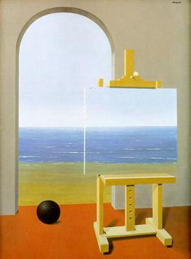

Recursion
By Tom McCoy
This page lists my favorite examples of recursion. I take recursion to mean "having an item of category X inside another item of category X." (This definition is the standard one in linguistics. It differs from the computer science notion of recursion, which refers to having a process call itself, but the concepts are related: Linguistics-style recursion is one potential result of computer-science-style recursion. For discussion of the definition of recursion, see this page).
1. Cookies & Creme flavored Oreos
These now-discontinued Oreos contained little bits of Oreo inside their frosting. (Image via Pinterest.)

2. List of lists of lists
Wikipedia contains an extensive list of lists of lists.
3. Recursion in geography
- Countries within countries: San Marino and Vatican City are both entirely surrounded by Italy. Lesotho is entirely surrounded by South Africa.
- Dahala Khagrabari: Until 2015, there was a territory of India inside a territory of Bangladesh inside a territory of India inside a territory of Bangladesh. The innermost territory was called Dahala Khagrabari. Below is a map of Dahala Khagrabari from Wikipedia

- Recursive islands and lakes: A recursive island occurs when an island contains a lake that contains an island. A recursive lake occurs when a lake contains an island that contains a lake. Per Wikipedia, there are several examples of an island within an island within an island, and there is one example of a lake within a lake within a lake. Below is a map from Wikipedia of Isle Royale, an island within Lake Superior that contains several lakes of its own.

4. Siphonaptera
Augustus De Morgan (a logician known for De Morgan's laws) wrote the following poem, entitled Siphonaptera:
Great fleas have little fleas upon their backs to bite 'em,
And little fleas have lesser fleas, and so ad infinitum.
And the great fleas themselves, in turn, have greater fleas to go on;
While these again have greater still, and greater still, and so on.
5. Recursion on TV
The following piece of dialogue appears in Community (Season 2, Episode 3) and gives a rare example of double center embedding.
Annie: Bitter much?
Britta: Say 'Bitter much?' much? Annie: Say 'Say "Bitter much?" much?' ... much?
6. Recursive children's songs
There are many children's songs that can be repeated indefinitely—if not quite ad infinitum, definitely ad nauseam. Some well-known ones include the following:
John Jacob Jingleheimer Schmidt
John Jacob Jingleheimer Schmidt,
His name is my name too,
Whenever we go out,
The people always shout,
There goes John Jacob Jingleheimer Schmidt,
Da da da da da da da...
John Jacob Jingleheimer Schmidt,
His name is my name too,
...
Yon Yonson
My name is Yon Yonson
I work in Wisconsin
I work in a lumbermill there.
The people I meet as I walk down the street,
They say what's my name and I say:
"My name is Yon Yonson..."
The Song that Gets on Everybody's Nerves
I know a song that gets on everybody's nerves,
Everybody's nerves,
Everybody's nerves,
I know a song that gets on everybody's nerves,
And this is how it goes:
``I know a song that gets on everybody's nerves,
..."
The Song that Never Ends
This is the song that never ends,
Yes, it goes on and on, my friends,
Some people started singing it, not knowing what it was,
And they'll continue singing it forever just because
This is the song that never ends,
...
7. Art within art
- Play within a play: A Midsummer Night's Dream contains another play called Pyramus and Thisbe, performed by the characters.
- Story within a story: Many stories contain stories within them that are narrated by characters in the story. For example, all of the tales in One Thousand and One Nights are told by Scheherazade, a character in a higher-level narrative. Some of these stories, such as "Sinbad the Sailor," contain a similar framing device, leading to a story within a story within a story: Scheherazade is telling a story about Sinbad who is telling a story about his voyages.
- Painting within a painting: René Magritte's The Human Condition is one among many paintings to feature another painting within them. (Image from Wikipedia.)

8. A recursive name
In 2018, Macaulay Caulkin asked his Twitter followers to vote on what his middle name should be. The winning choice was Macaulay Caulkin, so he legally changed his name to Macaulay Macaulay Culkin Culkin. (Screenshot from Twitter.)
9. Recursive advertising
The Droste brand of cocoa powder uses a recursive image on its packaging. (Image from Amazon.) Thanks to Herb Clark for pointing me to this!